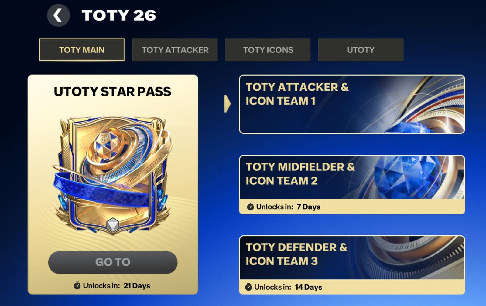
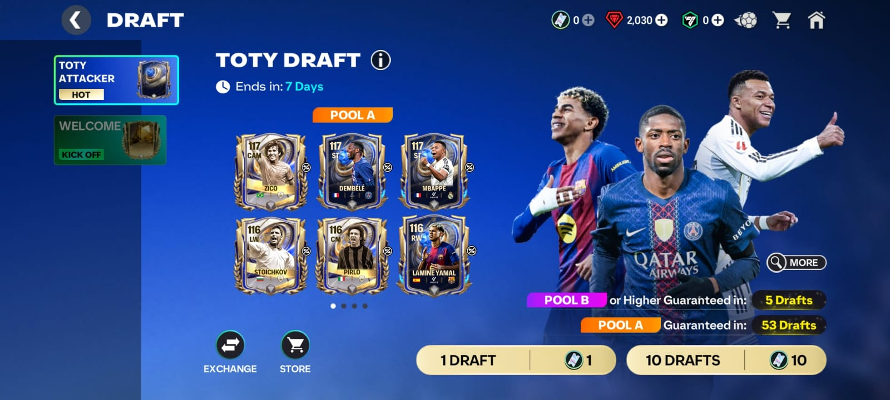
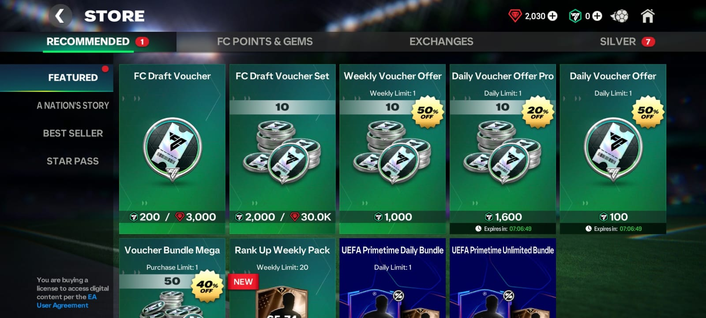
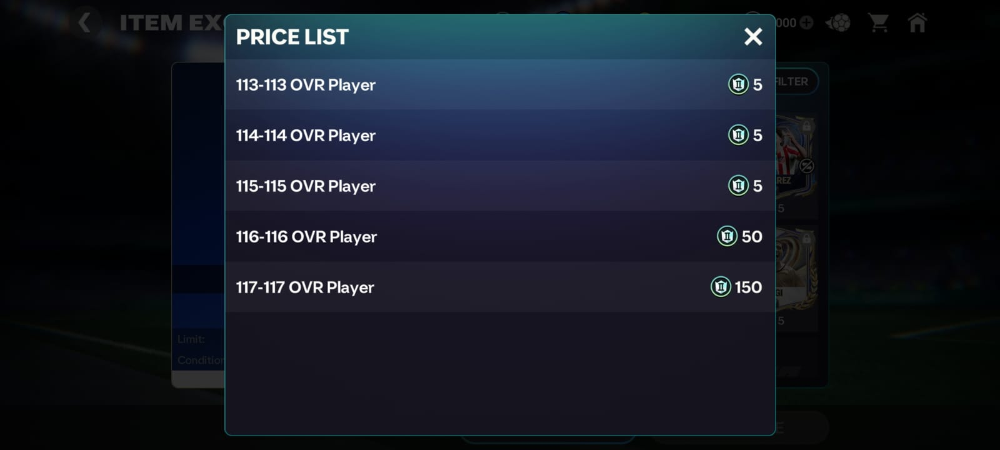
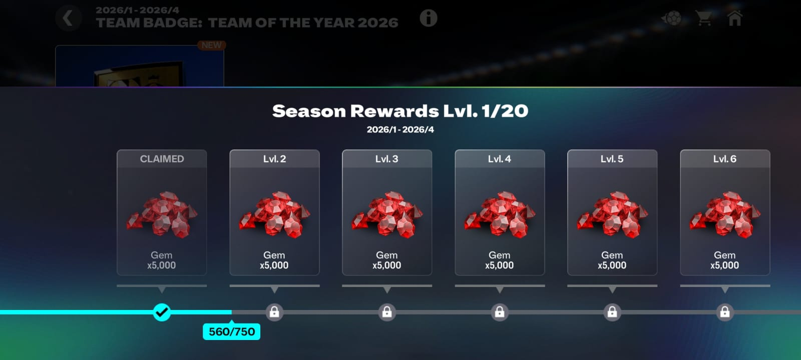
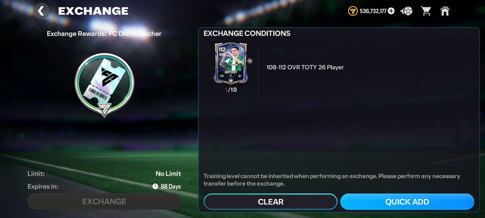
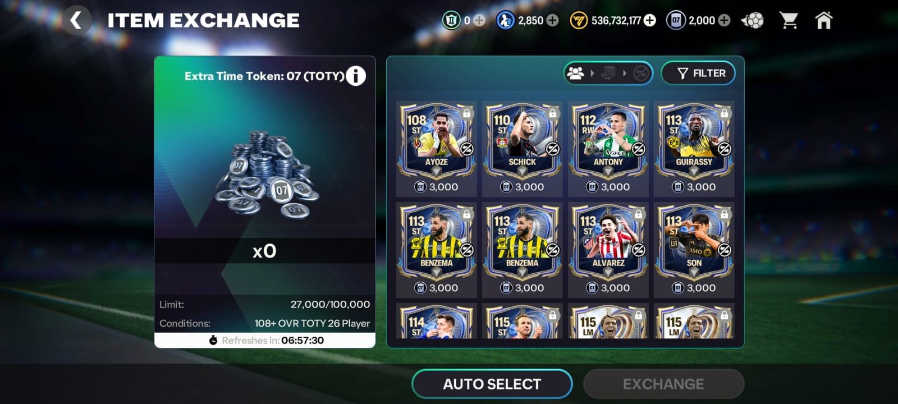
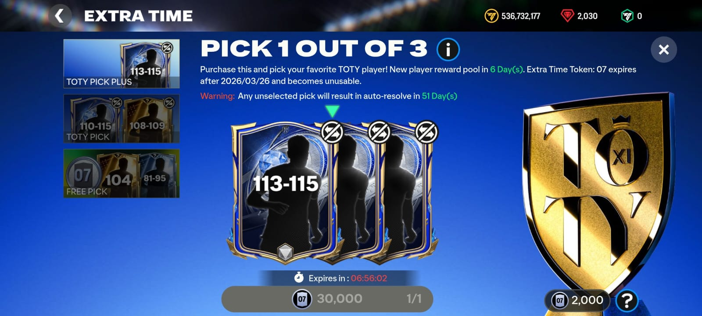
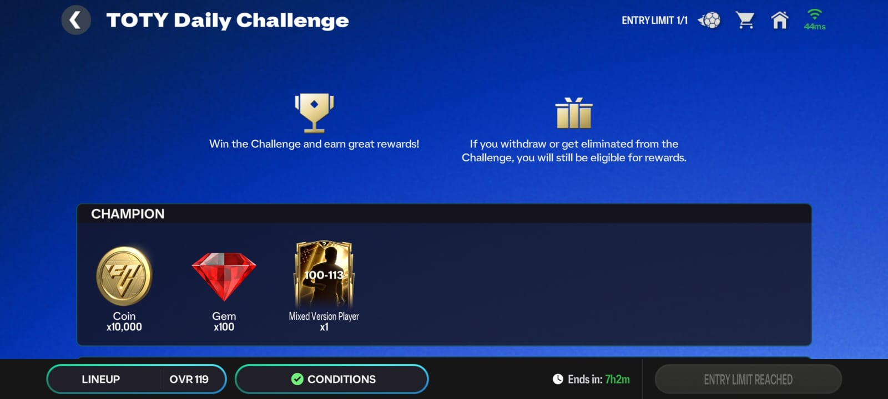
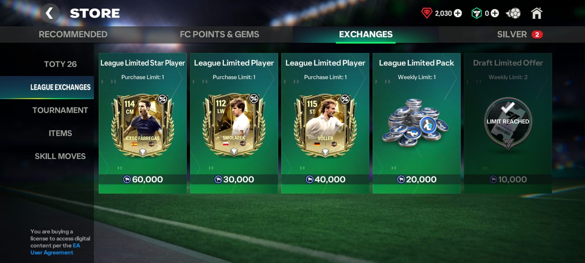

| Unit 1 – TOTY Event Structure |
| Unit 2 – Draft System & Exchanges |
| Unit 3 – Gems Collection & Usage |
| Unit 4 – Fodder Collection & Usage |
| Unit 5 – Final Tips |
Unit 1 – TOTY Event Structure
The Event runs for 42 Days (6 weeks)
Week 1 → Attackers
Week 2 → Midfielders
Week 3 → Defenders
Week 4 → UTOTY
Each week will have their own chapter & rewards.
Complete the skill game in the TOTY Attacker Chapter & claim the rewards.
Unit 2 – Draft System & Exchanges
Team of the Year no longer uses the shard system & it is replaced by the Draft.
The Structure of the Draft System is simple:
You spend Gems (3k) or FC Points (200) to buy a Draft ticket & you use that ticket to get a player 108–117.
The probability is:
Pool A (116–117) = 2%
Pool B (113–115) = 18%
Pool C (108–112) = 80%
Pool A is guaranteed after spending 100 Draft tokens
(Note: The countdown is refreshed to 100 if u pack a Pool A player)
Pool B is guaranteed after spending 10 Draft tokens
(Note: The countdown is refreshed to 10 if u pack a Pool B player)
Exchanges →
It is a SCAM, don't exchange ur players for the "26 Token 2"
Unit 3 – Gems Collection & Usage
In this event, the store packs have been removed in favour of draft tokens.
Gems Collection:
1. Division Rivals
H2H → 49k Gems
VSA → 49k Gems
MM → 49k Gems
(5k weekly = 30k Gems)
2. League
(10k weekly = 60k Gems)
3. Badges level 2
10k Gems
4. From Events & other miscellaneous
10k Gems
Total Gems → 257k Gems
Equivalent to 85 Draft Ticket
Unit 4 – Fodder Collection & Usage
After using draft tokens, u will have a loot of fodders (108–115).
You can spend them in various ways:
1. You can exchange 10x 108–112 players for a Draft Ticket
2. You can put 108–115 in extra time tokens (each player = 3k tokens)
 3. You can put 113-117 Fodders in new "26 Token 2" Exchange, WHICH I WONT RECOMEND AT ALL, ITS A SERIOUS L MOVE IF YOU DO THAT.

My Tip: Save Fodders for now (They might be used in UTOTY exchanges)

Unit 5 – Final Tips
1. Complete Daily Challenges everyday + quest = 18 Million Coins daily = 756M coins in 6 weeks
2. Save up Draft tickets & Fodder for UTOTY
3. Grind Division Rivals (This is a must if u want to get 117s)
4. Don't exchange any TOTY players in extra time or any exchanges for now
5. Try opening 10 Drafts at once
6. Use 20k league tokens to get 2 Draft Tokens per week
